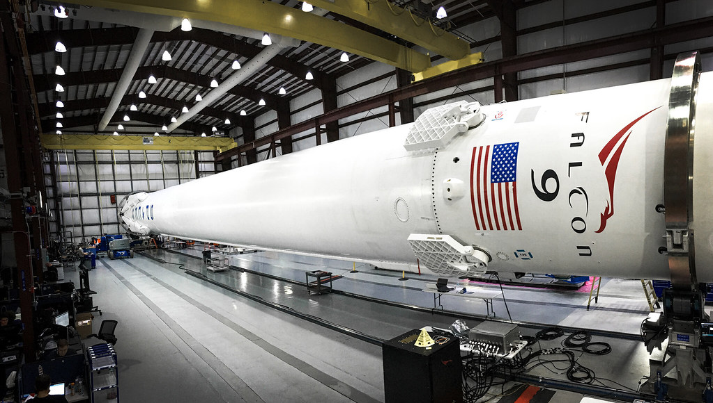
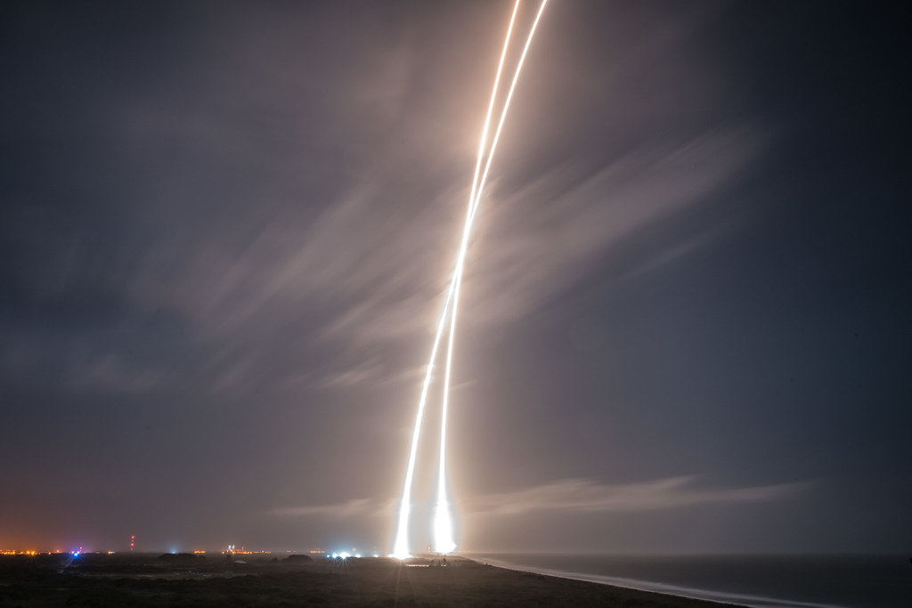
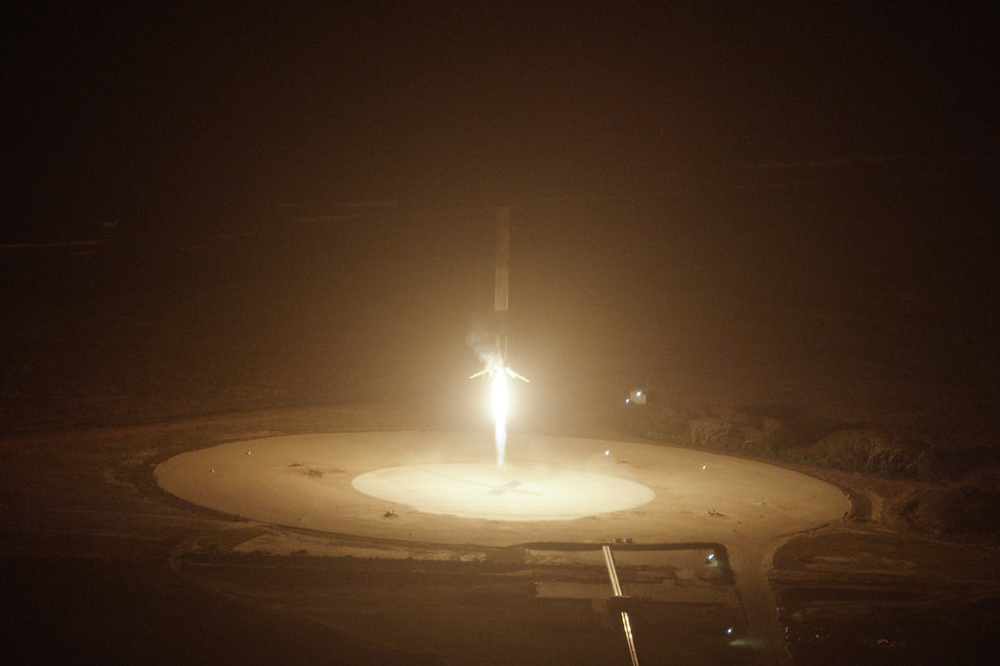
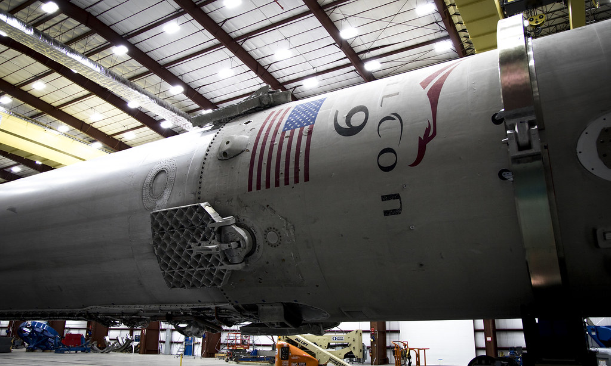

Storia SpaceX · Decima parte · Dicembre 2015
Il Falcon è atterrato
Dopo quasi sei mesi senza lanci, SpaceX consegna undici satelliti in orbita e riporta il primo stadio a Cape Canaveral. La sera del 21 dicembre 2015 la squadra può finalmente festeggiare un razzo che torna a terra e rimane in piedi.
Indice Storia SpaceXTornare a partire, prima di tutto
Il 21 dicembre 2015 il Falcon 9 è di nuovo sul complesso 40 di Cape Canaveral. Sono passati quasi sei mesi dalla perdita di CRS-7. Nel capitolo precedente abbiamo seguito l'incidente, l'indagine e la preparazione della ripresa; adesso il lavoro fatto a terra deve affrontare una missione vera. A bordo ci sono undici satelliti ORBCOMM. Per il cliente, per i tecnici e per chi aspetta il proprio turno nel calendario dei lanci, la prima risposta necessaria è che il razzo torni a consegnare il carico. [1]
Il recupero del primo stadio rende quella sera particolarmente attesa, ma non sostituisce il compito commerciale. SpaceX lo indica nel dossier di missione come obiettivo sperimentale secondario. È una distinzione stabilita prima della partenza, non una spiegazione da usare soltanto se qualcosa va male. La consegna dei satelliti e l'atterraggio hanno risultati propri: si può riuscire nella prima e perdere il booster. Dopo CRS-7, invece, l'azienda ha bisogno soprattutto di riprendere il servizio interrotto.
La possibilità di ottenere entrambi i risultati dà alla missione un significato ulteriore. Tornare a volare dimostrerebbe che le modifiche permettono di ripartire; riportare il primo stadio integro darebbe una risposta concreta anche al programma di recupero. Non cancellerebbe il carico NASA perduto a giugno, né chiuderebbe ogni questione sulla sicurezza. Consentirebbe però di affrontare il lavoro successivo con un veicolo nuovamente in servizio e, per la prima volta, con un booster tornato da un lancio orbitale.

.jpg){kind=link}
Undici satelliti, un cliente che deve lavorare
ORBCOMM gestisce comunicazioni fra dispositivi: collegamenti che permettono di seguire mezzi, merci e impianti anche dove la rete terrestre non arriva. I satelliti OG2 ampliano questa capacità in orbita bassa. Non sono un carico simbolico scelto per accompagnare una dimostrazione televisiva; devono entrare in una costellazione e fornire un servizio. La missione porta gli undici esemplari rimasti dopo il primo gruppo di sei, lanciato nel luglio 2014. [1] [3]
Sierra Nevada Corporation ha costruito i veicoli, sistemati per il trasporto su tre anelli sovrapposti. Una volta raggiunta l'orbita, ciascuno deve separarsi, aprire i pannelli solari e cominciare a comunicare. La ripresa di SpaceX comprende dunque anche il lavoro di altri: i satelliti devono sopportare il lancio e funzionare dopo il rilascio. La verifica del costruttore, annunciata il giorno seguente, confermerà l'apertura dei pannelli e i primi controlli per tutti gli undici. È un riscontro distinto dall'immagine del razzo sulla piazzola.
Il Falcon 9 che li trasporta è la versione potenziata comunemente chiamata Full Thrust. Lo sviluppo era iniziato prima di CRS-7: sarebbe scorretto presentarla interamente come una ricostruzione nata dall'incidente. Le correzioni per riprendere i voli e gli aumenti di prestazione si incontrano nello stesso lancio, ma rispondono a esigenze diverse. L'azienda deve mostrare che sa rimettere in servizio il veicolo mentre porta avanti il programma già avviato. [4]
Questa sovrapposizione aumenta ciò che si potrà imparare dalla missione, senza rendere meno impegnativo il ritorno. Un miglioramento previsto su carta non è ancora un risultato in volo. Servono la salita, il funzionamento del secondo stadio, la separazione dei satelliti e i dati raccolti durante ogni fase. Il successo commerciale non potrà essere dedotto dal solo decollo, così come il successo del recupero non potrà essere dedotto dall'arrivo del booster nelle vicinanze della costa.
Un razzo sale, una sua parte torna indietro
La partenza avviene alle 20:29 della Florida: in Italia sono le 02:29 del 22 dicembre. La data storica resta il 21 dicembre 2015, riferita al luogo del lancio. Nella diretta ufficiale si vede il Falcon 9 lasciare la rampa nella notte e proseguire la salita; dopo la separazione, le due parti del veicolo prendono compiti diversi. Il secondo stadio continua verso l'orbita con i satelliti. Il primo deve cambiare traiettoria e tornare a Cape Canaveral. [2] [5]
Il bersaglio è Landing Zone 1, una piazzola terrestre ricavata nell'area dell'ex complesso 13. Non è la rampa da cui il Falcon è appena partito. Il ritorno richiede una manovra propulsiva per correggere il percorso, una frenata durante il rientro e un'ultima accensione vicino al suolo. Le alette a griglia partecipano alla guida; le quattro gambe devono aprirsi e sostenere il veicolo una volta spento il motore. La sequenza è automatica, ma il suo esito dipende da molte operazioni consecutive.
La fotografia a lunga esposizione permette di vedere insieme la traccia della partenza e quella del ritorno. Non sono due razzi lanciati in direzioni opposte, né un'immagine realizzata per illustrare un progetto futuro. Sono fasi dello stesso volo registrate in un'unica esposizione. Prima il veicolo completo accelera per portare il carico nello spazio; poi il primo stadio, ormai separato, usa una parte del propellente rimasto per tornare e frenare.
La piazzola terrestre offre un bersaglio stabile. Non subisce il moto delle onde e non richiede di toccare un ponte nel mare aperto. Questo non rende banale la manovra: la posizione e la velocità devono comunque essere corrette quando il motore si spegne. Arrivare vicino non basta. Il razzo deve appoggiarsi sulle gambe senza cadere, mantenendo una struttura che ha appena attraversato la salita e il rientro.

.jpg){kind=link}
Il momento in cui rimane in piedi
Negli ultimi secondi il bagliore del motore riempie l'inquadratura. Il primo stadio scende, le gambe sono aperte, la velocità diminuisce. Poi la fiamma si spegne. Il veicolo resta sulla piazzola. Nelle comunicazioni si sente «The Falcon has landed», il Falcon è atterrato. Alla sede di Hawthorne la diretta mostra persone che alzano le braccia, applaudono e si abbracciano; le urla di gioia coprono per un momento il commento. Non serve inventare un discorso per descrivere quella reazione: è registrata nelle immagini ufficiali. [6]
La commozione di quella sera ha una ragione precisa. Nei tentativi precedenti SpaceX aveva dimostrato parti della manovra, senza riuscire a conservare un booster sulla piattaforma oceanica. Adesso il risultato atteso è visibile: un primo stadio intero, fermo a terra. Chi ha seguito le prove non deve più immaginare come apparirebbe un atterraggio completato. Può guardarlo. Per una squadra appena passata attraverso un grave incidente e una lunga sospensione, poter festeggiare quel risultato conta anche oltre il programma di riutilizzo.
Musk racconta ai giornalisti un equivoco che rende bene l'incertezza degli ultimi istanti. Il boato sonico gli arriva mentre il razzo sta toccando terra e, in un primo momento, gli fa pensare a un'esplosione. Tornando nel controllo del lancio vede invece il booster ancora in piedi. «Non riesco quasi a crederci», dice. È la sua testimonianza dopo il volo, non una frase attribuita a un pensiero che nessuno avrebbe potuto conoscere. [7]
Intanto il secondo stadio deve ancora completare il rilascio dei satelliti. L'atterraggio precede la fine della loro separazione, che avviene circa venti minuti dopo il decollo. La festa per il recupero non significa dunque che ogni attività del lancio sia già terminata. La squadra continua a seguire il carico, e il risultato completo arriva quando anche gli undici satelliti sono stati consegnati. La riaccensione successiva del secondo stadio offre inoltre una verifica utile per le missioni che richiederanno accensioni distanziate nel tempo. [1] [7]

.jpg){kind=link}
Rivedere la gioia della squadra
Il montaggio ufficiale pubblicato da SpaceX nel gennaio 2016 conserva la discesa e la reazione delle persone che la seguono. Per il lancio completo, con la consegna dei satelliti, è disponibile anche la registrazione della diretta ORBCOMM-2.
Video incorporato dal canale ufficiale SpaceX, senza scaricare o ripubblicare il filmato. Riproduzione soggetta alle impostazioni del servizio.
Che cosa è successo per la prima volta
Il primato va descritto con cura. SpaceX ha riportato a terra il primo stadio di un lanciatore di classe orbitale durante una missione commerciale che consegna satelliti in orbita. Quel primo stadio, però, non ha compiuto un'orbita: si è separato prima, lasciando al secondo il lavoro necessario per raggiungerla. Dire che è tornato «dall'orbita» confonde i due percorsi e attribuisce al booster una prestazione diversa da quella effettivamente compiuta.
Non è neppure il primo razzo ad atterrare verticalmente dopo aver raggiunto lo spazio. Il 23 novembre Blue Origin ha recuperato New Shepard in un volo suborbitale. Il successo di novembre è reale; quello di dicembre affronta un'altra missione, con un lanciatore destinato a portare carichi in orbita. La differenza aiuta a capire entrambi senza ridurre la storia a una disputa fra fondatori. Raggiungere lo spazio e immettere un satellite in orbita non richiedono lo stesso percorso né la stessa velocità. [8]
Atterrato non significa già riutilizzato
Il booster recuperato, noto come B1019, torna nell'hangar. Le fotografie dei giorni successivi mostrano sulla superficie i segni del volo. Adesso i tecnici possono esaminare ciò che prima andava perduto in mare: strutture, motori e sistemi che hanno lavorato davvero, non soltanto esemplari sottoposti a prove a terra. È un vantaggio del recupero prima ancora che diventi un risparmio sul lancio seguente. La verifica materiale può essere confrontata con i dati della missione. [9]
Per arrivare al riutilizzo bisogna però stabilire quali parti siano in condizioni accettabili, quali richiedano interventi e quanto lavoro serva per preparare un altro volo. Un booster integro non è automaticamente pronto per un nuovo cliente. Il modello economico dipenderà anche da controlli, manutenzione, tempo di preparazione e numero di impieghi possibili. La sera del 21 dicembre non dimostra ancora un prezzo nuovo, né una frequenza di lancio paragonabile a quella degli aerei.
Musk annuncia che questo primo esemplare sarà conservato, pur potendo essere sottoposto a prove a terra. Non sarà lui a inaugurare il secondo volo di un booster recuperato. Quel traguardo appartiene a una fase successiva della storia. Qui il fatto raggiunto è già importante e non ha bisogno di essere allargato: SpaceX sa riportare un primo stadio a terra dopo averlo impiegato per un lancio commerciale. [7]

.jpg){kind=link}
La fiducia per riprovare in mare
Il successo terrestre incoraggia il programma di recupero. Le prove oceaniche non diventano improvvisamente semplici, ma ora c'è un atterraggio completo a confermare che il veicolo può frenare, guidarsi fino al bersaglio e restare in piedi. La domanda successiva riguarda la ripetibilità e le condizioni differenti di un ritorno in mare. Serviranno altri tentativi, anche falliti, prima che la piattaforma conservi il suo primo booster.
La ripresa del calendario richiederà inoltre qualcosa di meno spettacolare di questa sera: consegne regolari. Clienti e NASA devono poter affidare nuove missioni al Falcon 9. Nel 2016 SpaceX dovrà riuscire a fare entrambe le cose, continuare il servizio e sviluppare il recupero. La festa di Hawthorne non conclude quel lavoro. Gli dà una conferma e una fiducia che fino a pochi minuti prima nessuna immagine di un razzo realmente atterrato aveva potuto offrire.
Fonti e documentazione
Ricostruzione storica aggiornata il 9 ottobre 2026. Le dichiarazioni sono attribuite; le considerazioni sul significato industriale del recupero sono analisi editoriale, non stime certificate dei risparmi.
- [1] SpaceX, dossier ORBCOMM-2, documento originale conservato in un archivio esterno. Carico, sequenza prevista e carattere sperimentale secondario dell'atterraggio.
- [2] SpaceX, diretta ufficiale ORBCOMM-2, 21 dicembre 2015. Registrazione della salita, del recupero e della consegna del carico.
- [3] Sierra Nevada Corporation, 22 dicembre 2015. Configurazione del carico e verifiche iniziali degli undici satelliti.
- [4] Spaceflight Now, 18 ottobre 2015. Dichiarazioni SpaceX sulla scelta della missione e sviluppo del veicolo potenziato precedente all'incidente.
- [5] OHB, comunicato del 22 dicembre 2015. Conferma del lancio e orario in Europa centrale.
- [6] SpaceX, The Falcon has landed, riepilogo ufficiale pubblicato il 12 gennaio 2016. Immagini del volo e reazioni della squadra.
- [7] Stephen Clark, Spaceflight Now, 22 dicembre 2015. Dichiarazioni post-volo di Musk sul boato, sulla verifica del secondo stadio e sulla conservazione del primo booster.
- [8] Blue Origin, New Shepard, 24 novembre 2015. Comunicato sul volo suborbitale e sul recupero del 23 novembre.
- [9] SpaceX, fotografia del primo stadio recuperato, 29 dicembre 2015. Scheda storica dell'immagine e licenza.
Fotografie e riutilizzo
Quattro fotografie autentiche SpaceX, pubblicate con dedica al pubblico dominio CC0, con fonte e data nelle didascalie e nel registro delle immagini. Nessuna ricostruzione generata. I video restano sul canale ufficiale.
Consultare l’atlante tecnico
Caratteristiche, schemi, configurazioni e limiti: Recupero dei booster Falcon.